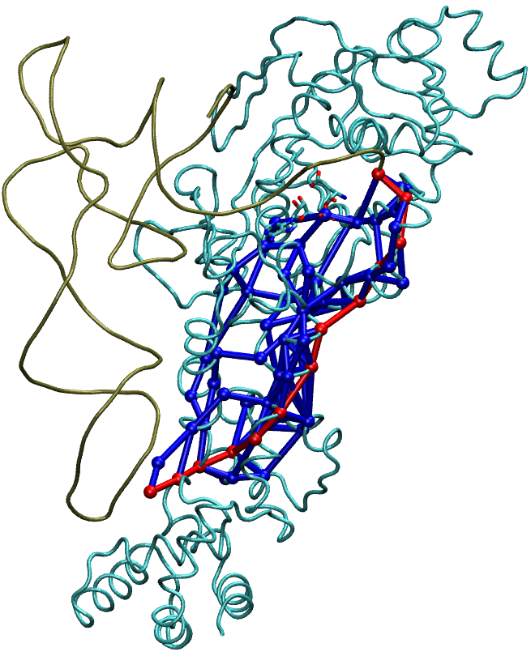

The Luthey-Schulten Group has developed a detailed tutorial that demonstrates the use of the NetworkView plugin.
Please go to the following URL and download the tutorial near the bottom of the page entitled: Dynamical Network Analysis.
http://faculty.scs.illinois.edu/schulten/tutorials/
The simplest networks consist of sets of nodes and edges that connect pairs of nodes. For example, in protein·protein interaction networks, nodes represent individual proteins, and if two proteins interact with one another, an edge is drawn between their nodes.
The NetworkView plugin can display dynamical network representations by loading
a network file via File | Load Network.... Once the network is
loaded, you can choose to perform "Action"s on the network (or subnetworks,
defined by the choices made in the Node Selection section of the
plugin), listed in the box at the bottom of the plugin window. Chose your
desired action and then click Apply. You can perform multiple
Actions, and when you want to actually view the results, click the
Draw button at the bottom of the plugin window.
File | Load Community Data.... You can then
use the Node Selection section of the plugin to choose individual communities to
perform Actions upon.

Critical nodes between communities can be displayed by choosing the proper
Node Selection.
Node Selection.